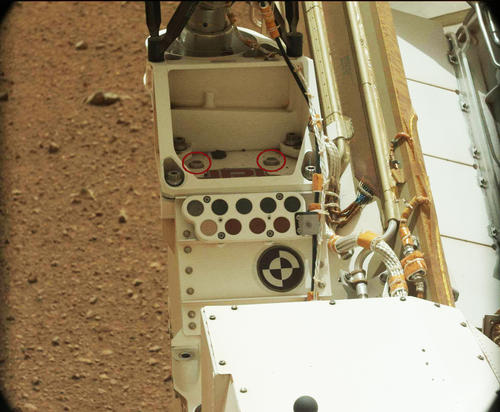
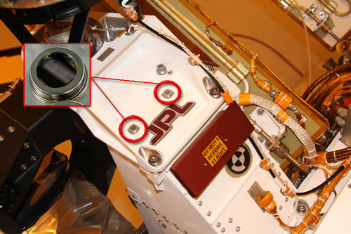
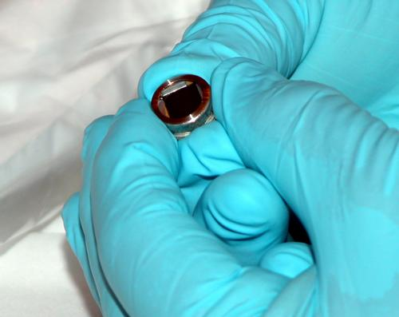

For all those who submitted your names, Congratulations! Your name was successfully etched onto a microchip and is officially on Mars!
How did NASA collect the names?
More than 1.2 million names were submitted on our web site over a one year period! Some 20,000 visitors to NASA.s Jet Propulsion Laboratory, Pasadena, Calif., and NASA's Kennedy Space Center, Cape Canaveral, Fla., wrote their names on pages that were scanned and reproduced at microscopic scale onto two chips the size of a dime.



How were the chips made? Engineers etched the names onto a silicon wafer or microchip. They used an electron beam .E-beam. machine at JPL that specializes in etching very tiny features (less than 1 micron, or less than the width of a human hair!). They normally use this machine to make high-precision microdevices in JPL's Microdevices Laboratory.